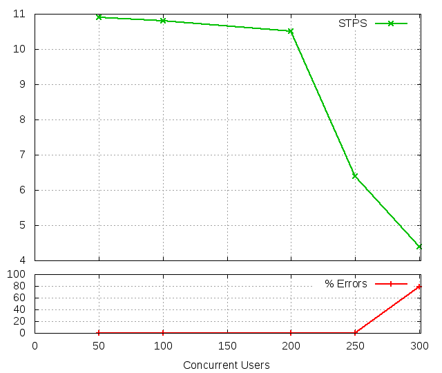
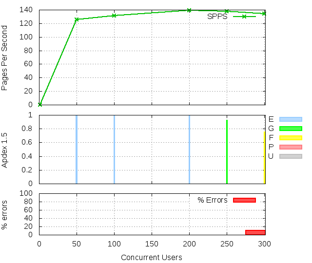
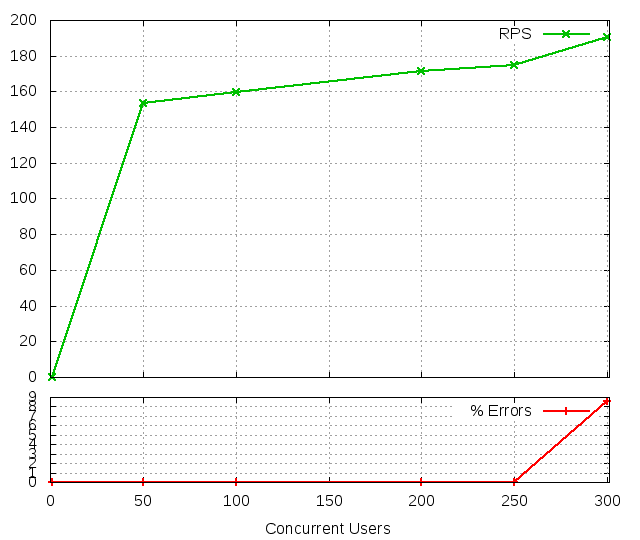
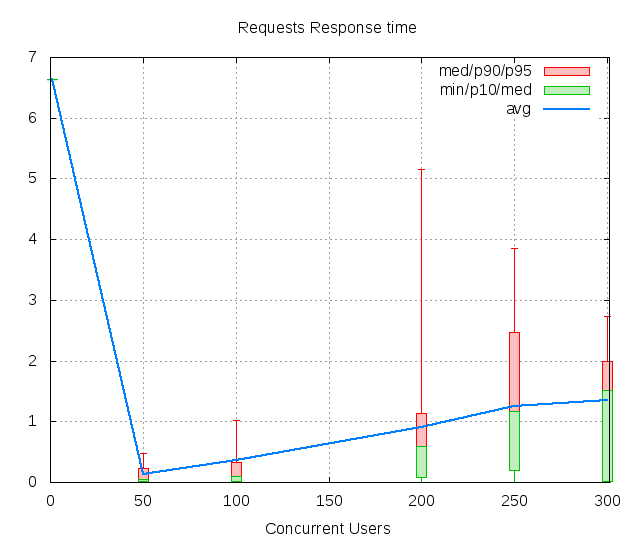

FunkLoad bench report
| Date: | 2016-12-17 11:32:03 |
|---|
Abstract
Simply testing a default static page Bench result of Simple.test_freewheel: No test description
Table of contents
1 Bench configuration
- Launched: 2016-12-17 11:32:03
- From: ip-172-31-18-197
- Test: test_Simple.py Simple.test_freewheel
- Target server: http://52.221.228.19:8037/api
- Cycles of concurrent users: [1, 50, 100, 200, 250, 300]
- Cycle duration: 10s
- Sleeptime between request: from 0.0s to 0.5s
- Sleeptime between test case: 0.01s
- Startup delay between thread: 0.01s
- Apdex: 1.5
- FunkLoad version: 1.16.1
2 Test stats
The number of Successful Tests Per Second (STPS) over Concurrent Users (CUs).

CUs STPS TOTAL SUCCESS ERROR 50 10.900 109 109 0.00% 100 10.800 108 108 0.00% 200 10.500 105 105 0.00% 250 6.400 64 64 0.00% 300 4.400 207 44 78.74%
3 Page stats
The number of Successful Pages Per Second (SPPS) over Concurrent Users (CUs). Note that an XML RPC call count like a page.

CUs Apdex* Rating SPPS maxSPPS TOTAL SUCCESS ERROR MIN AVG MAX P10 MED P90 P95 1 0.000 UNACCEPTABLE 0.000 0.000 0 0 0.00% 0.000 0.000 0.000 -1.000 -1.000 -1.000 -1.000 50 0.991 Excellent 125.500 146.000 1255 1255 0.00% 0.002 0.136 4.084 0.013 0.056 0.194 0.307 100 0.996 Excellent 131.200 150.000 1312 1312 0.00% 0.002 0.184 6.468 0.016 0.114 0.306 0.376 200 0.993 Excellent 139.500 186.000 1395 1395 0.00% 0.002 0.795 7.333 0.516 0.622 1.065 1.201 250 0.923 Good 137.900 168.000 1379 1379 0.00% 0.004 1.193 7.481 0.582 1.209 1.640 1.696 300 0.755 FAIR 134.500 194.000 1508 1345 10.81% 0.003 1.465 9.805 0.920 1.617 1.956 2.185 * Apdex 1.5
4 Request stats
The number of Requests Per Second (RPS) successful or not over Concurrent Users (CUs).
 
CUs Apdex* Rating* RPS maxRPS TOTAL SUCCESS ERROR MIN AVG MAX P10 MED P90 P95 1 0.000 UNACCEPTABLE 0.100 1.000 1 1 0.00% 6.638 6.638 6.638 6.638 6.638 6.638 6.638 50 0.991 Excellent 153.300 189.000 1533 1533 0.00% 0.002 0.129 3.187 0.010 0.050 0.232 0.469 100 0.965 Excellent 159.600 186.000 1596 1596 0.00% 0.002 0.367 8.455 0.012 0.097 0.331 1.029 200 0.968 Excellent 171.500 212.000 1715 1715 0.00% 0.002 0.902 7.044 0.088 0.598 1.139 5.157 250 0.893 Good 174.900 244.000 1749 1749 0.00% 0.002 1.256 9.119 0.198 1.170 2.469 3.857 300 0.743 FAIR 190.300 289.000 1903 1740 8.57% 0.001 1.358 8.820 0.012 1.521 1.991 2.729 * Apdex 1.5
5 Slowest requests
The 5 slowest average response time during the best cycle with 200 CUs:
- In page 001, Apdex rating: FAIR, avg response time: 1.89s, link: /bootstrap/3.3.0/css/bootstrap.min.css ``
- In page 001, Apdex rating: FAIR, avg response time: 1.81s, link: /bootstrap/3.3.0/css/bootstrap-theme.min.css ``
- In page 004, Apdex rating: Excellent, avg response time: 0.77s, get: /api/profile/me Visit profile page
- In page 005, Apdex rating: Excellent, avg response time: 0.76s, post: /api/upload/newimage Upload a new image
- In page 003, Apdex rating: Excellent, avg response time: 0.76s, get: /api/profile/me ``
6 Page detail stats
6.1 PAGE 001: /bootstrap/3.3.0/css/bootstrap.min.css
Req: 002, link, url /bootstrap/3.3.0/css/bootstrap.min.css

CUs Apdex* Rating TOTAL SUCCESS ERROR MIN AVG MAX P10 MED P90 P95 1 0.000 UNACCEPTABLE 1 1 0.00% 6.638 6.638 6.638 6.638 6.638 6.638 6.638 50 0.939 Good 123 123 0.00% 0.013 0.489 3.187 0.019 0.132 1.812 2.130 100 0.748 FAIR 121 121 0.00% 0.014 1.880 8.455 0.020 0.097 6.769 7.015 200 0.815 FAIR 143 143 0.00% 0.014 1.889 7.044 0.021 0.130 5.872 6.209 250 0.716 FAIR 164 164 0.00% 0.015 2.326 9.119 0.023 3.420 4.338 4.671 300 0.719 FAIR 178 178 0.00% 0.014 1.741 8.820 0.023 2.001 3.932 4.268 * Apdex 1.5
7 Failures and Errors
7.1 Failures
27 time(s), code: -1:
No traceback.
83 time(s), code: 500:
No traceback.
28 time(s), code: 502:
No traceback.
7.2 Errors
25 time(s), code: -1:
Traceback (most recent call last): File "/usr/lib/python2.7/dist-packages/funkload/FunkLoadTestCase.py", line 202, in _connect cert_file=self._certfile_path, method=rtype) File "/usr/lib/python2.7/dist-packages/funkload/PatchWebunit.py", line 385, in WF_fetch errcode, errmsg, headers = h.getreply() File "/usr/lib/python2.7/httplib.py", line 1123, in getreply response = self._conn.getresponse() File "/usr/lib/python2.7/httplib.py", line 1051, in getresponse response.begin() File "/usr/lib/python2.7/httplib.py", line 415, in begin version, status, reason = self._read_status() File "/usr/lib/python2.7/httplib.py", line 371, in _read_status line = self.fp.readline(_MAXLINE + 1) File "/usr/lib/python2.7/socket.py", line 476, in readline data = self._sock.recv(self._rbufsize)
error: [Errno 104] Connection reset by peer
8 Definitions
CUs: Concurrent users or number of concurrent threads executing tests.
Request: a single GET/POST/redirect/xmlrpc request.
Page: a request with redirects and resource links (image, css, js) for an html page.
STPS: Successful tests per second.
SPPS: Successful pages per second.
RPS: Requests per second, successful or not.
maxSPPS: Maximum SPPS during the cycle.
maxRPS: Maximum RPS during the cycle.
MIN: Minimum response time for a page or request.
AVG: Average response time for a page or request.
MAX: Maximmum response time for a page or request.
P10: 10th percentile, response time where 10 percent of pages or requests are delivered.
MED: Median or 50th percentile, response time where half of pages or requests are delivered.
P90: 90th percentile, response time where 90 percent of pages or requests are delivered.
P95: 95th percentile, response time where 95 percent of pages or requests are delivered.
Apdex T: Application Performance Index, this is a numerical measure of user satisfaction, it is based on three zones of application responsiveness:
Satisfied: The user is fully productive. This represents the time value (T seconds) below which users are not impeded by application response time.
Tolerating: The user notices performance lagging within responses greater than T, but continues the process.
Frustrated: Performance with a response time greater than 4*T seconds is unacceptable, and users may abandon the process.
By default T is set to 1.5s this means that response time between 0 and 1.5s the user is fully productive, between 1.5 and 6s the responsivness is tolerating and above 6s the user is frustrated.
The Apdex score converts many measurements into one number on a uniform scale of 0-to-1 (0 = no users satisfied, 1 = all users satisfied).
Visit http://www.apdex.org/ for more information.
Rating: To ease interpretation the Apdex score is also represented as a rating:
- U for UNACCEPTABLE represented in gray for a score between 0 and 0.5
- P for POOR represented in red for a score between 0.5 and 0.7
- F for FAIR represented in yellow for a score between 0.7 and 0.85
- G for Good represented in green for a score between 0.85 and 0.94
- E for Excellent represented in blue for a score between 0.94 and 1.
Report generated with FunkLoad 1.16.1, more information available on the FunkLoad site.